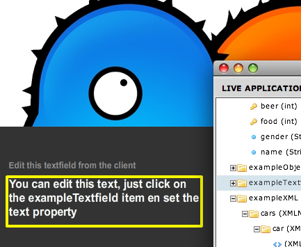

Highlighting
When you click on a display object in the application view, the object get's highlighted with a yellow border in your application. All objects that extends the DisplayObject class can be highlighted.
